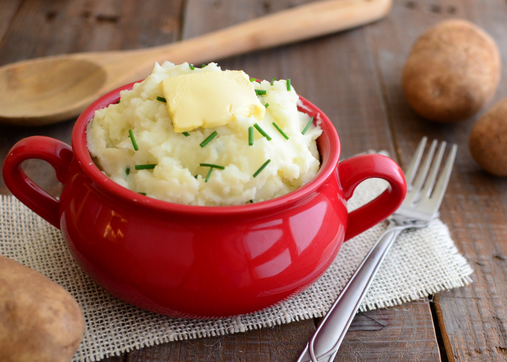

A Recipe for Mashed Potato

Mashed Potato with Butter and Milk
This is a simple mashed potato perfect for a side with most dishes. It is quite simple, with
main ingredients being only potatoes, butter, and milk.
- 1kg Potatoes
- 85g Butter
- A Splash of Milk
- Salt
- Peel the potatoes, and cut them all into equal sizes. Drop them into a pan of water to keep them from turning black.
- Rinse them, to remove any bits of peel and starch. Boil with a little salt until soft in the middle with a fork.
- Pass through a ricer or use a masher.
- Add the butter and milk. It helps to melt the butter first.
- Mix it up, and taste. Add more salt if needed.